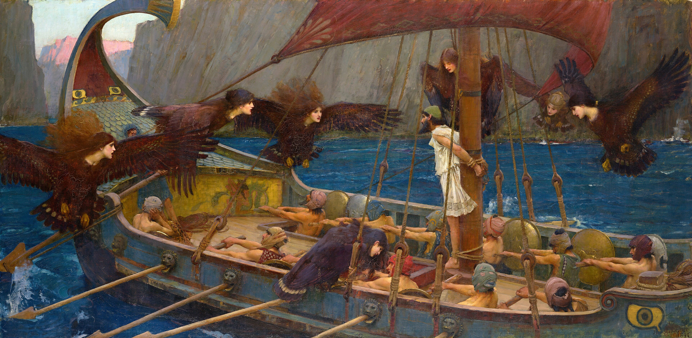
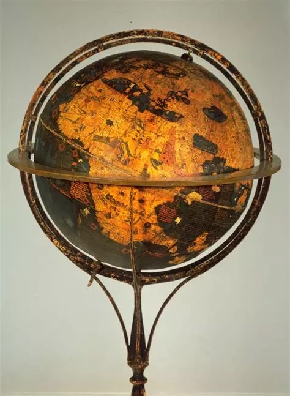

Verslag nummer 96
Toegevoegd op zaterdag 30 mei 2026
925 woorden
Wat gebeurde er in de twintigste eeuw?
Deze bundel bestaat uit acht essays of redevoeringen die Sloterdijk tussen 2005 en 2013 publiceerde of schreef. Hierin put hij, in "seiner charakteristisch poetisch-suggestiven Ausdrucksweise" zoals Rosa het omschrijft (Resonanz, p.86), in grote mate uit zijn standaardrepertoire: de overgang naar de moderniteit als gevolg van een nautische globalisering, de risico-nemende ondernemer als prototypische individueel-monadische mens, of culturen als kunstmatige broeikassen van het 'mensenpark' – om maar een paar onderwerpen te noemen.
Toch zit er ook wel weer veel nieuws in dit boekje. Zo heeft hij het op verschillende plekken over Buckminister FullersOperating Manual for Spaceship Earth uit 1968, dat hij koppelt aan het inzicht dat de moderne mens zijn woonplaats Aarde als globe ervaart, een ruimteschip dan note bene in gevaar verkeert, terwijl we de navigatie nog niet eens onder de knie hebben:
Het in-de-wereld-zijn van de mens, waarover de twintigste-eeuwse filosofie sprak, ontpopt zich dus als een aan-boord-zijn van een storingsgevoelig kosmisch vaartuig. (p.23).
Twee boeken over hetzelfde
Het was fijn om dit boekje min of meer parallel aan Absolute Democatie te lezen. Net als Pfeijffer fileert Sloterdijk de hedendaagse cultuur en maatschappij, dus veel van de besproken onderwerpen konden vanuit deze twee boeken in een ander en diverser perspectief gezien worden. Maar waar Pfeijffer zich met name op de actualiteit richt, werpt Sloterdijk zijn analytische hengel veel verder uit. Zo heeft hij een heel essay over de verschillende epitheta die Odysseus worden toegedicht, en ziet hij hierin een handreiking voor een antwoord op de vraag wat de hedendaagse mens kenmerkt:
Wie de afgematte Europeanen opnieuw wil uitleggen wat Europa inhoudt, om ze ertoe te bewegen terug te keren naar het beste wat ze in huis hadden, moet de oude boeken weer opslaaan, de Europese testamenten, die gaan over de noodzaak van zeevaart, van reisstress, van beproevingen, van kruisen, hijskranen, masten en machines van levenswijsheid. (p.183)

Algemene tendensen
Dus wat gebeurde er in de twintigste eeuw? Door de hoeveelheid van onderwerpen is het wat lastig hier een eenduidige antwoord op te geven. Deze eeuw, met al haar strijd en gruwelen, is "een puur fantoom geworden, dat vanuit het levensgevoel van de huidige generaties niet meer te reconstrueren valt". Sloterdijk citeert François la Rochefoucauld die stelt dat "le soleil ni la mort ni le XXe siècle ne se peuvent regarder fixement", of Natacha Michel, die niet verder komt dan dat "la XXe siècle a eu lieu" (p.86f.).
Toch denk ik dat we uit al het literaire, historische en wijsgerige geweld wel wat algemene tendensen kunnen destilleren. Sloterdijk ziet in de twintige eeuw de culminatie of radicalisering van een aantal sociaal-economische processen, waarvan in de meeste gevallen de oorsprong in de vroege Renaissance van de veertiede eeuw of de scheepvaart van de vijftiende eeuw gevonden kan worden.
Zo ziet hij in de Decamerone als eerste indicatie van langzaam opkomend individualisme. Als reactie op de grote pest-epidemie schreef Boccaccio honderd gezangen die samen een "menselijke komedie" vormden – als tegenhanger van de honderd gezangen uit de goddelijke. Optimisme, zelfredzaamheid en individuele ontplooiing, de overtuiging dat je aan jezelf kunt werken en je eigen leven kunt verbeteren. Deze gedachten, waar Sloterdijk al eerder de term 'Petrarca-effect' voor heeft gemunt, liggen aan de basis van het moderne mensbeeld en zijn een direct gevolg van de grote pestepidimie uit de veertiende eeuw.
Bijbelkennis en christelijke fabuleerkunst waren duidelijk niet tegen de invasie van de realiteit opgewassen – men zag dat bidden net zomin hielp als vloeken, dat inkeer in jezelf de storm van infecties net zomin tegenhield als je laten gaan. (p.130)
Een tweede belangrijke tendens is de al genoemde globalisering, die na de ontdekking van de westelijke doorvaarroute naar de Molukken in een stroomversnelling is gekomen. Hij ziet dit als een gevolg van de verslaving aan kruiden, waarmee de specerijenhandel "de drugshandel is geweest van de late middeleeuwen" (p.77). Maar bovenal is de globalisering een gebeurtenis in de geschiedenis van het denken: het betreft "de snelle opheffing van het recht op onwetendheid" (p.65).

Hét novum
Maar hét novum van de twintigste eeuw is de "antizwaartekrachtsdynamiek van het reële in de loop van de technische recontructie van de wereld", wat een een Nietzschiaanse herwaardering van alle waarden oplevert:
Het westerse systeem van levensontlasting op basis van de extenieve fiscale staat en de op fossiele brandstoffen gebaseerde civilisatie van het massacomfort. (p.104)
In dit kader spreekt hij van de "nieuwe dienaar", namelijk de fossiele brandstoffen waarmee het "epos van de motoren" is begonnen (p.107). Maar hij die denkt dat daarmee het tijdperk van de slavernij is afgesloten, dient zich nog te realiseren dat er nog een dienaar is "waarvan het lijden de ontlaste toestanden in het paleis van de welvaart mogelijk maakt". Hij doelt hier op de dieren in de bio-industrie, waarvan de handel "de grootste legale drugsmarkt" vormt (p.115).
Conclusie
Wat gebeurde er in de twintigste eeuw? is een relatief goed leesbaar, informatief en inspirerende bundel. Door de opzet is het onvermijdelijk dat er wat dubbelingen en herhalingen in voorkomen, maar in het geval van Sloterdijk is dat zeker niet erg, omdat het telkens weer andere en nieuwe inzichten oplevert.
Van alles essays vond ik het laatste, De andere logos, het minst leesbaar en het zevende, Odysseus de sofist, het fraaist. En het is opvallend dat het in het titelessay voornamelijk gaat over wat er gebeurde in de negentiende eeuw.
Ik heb van alle essays een wat uitgebreide samenvatting gemaakt. Maar om te voorkomen dat deze boekbespreking nog langer wordt dan -ie al is (en daarmee de statistieken vertroebelt) heb ik die op een separate pagina beschikbaar gesteld.